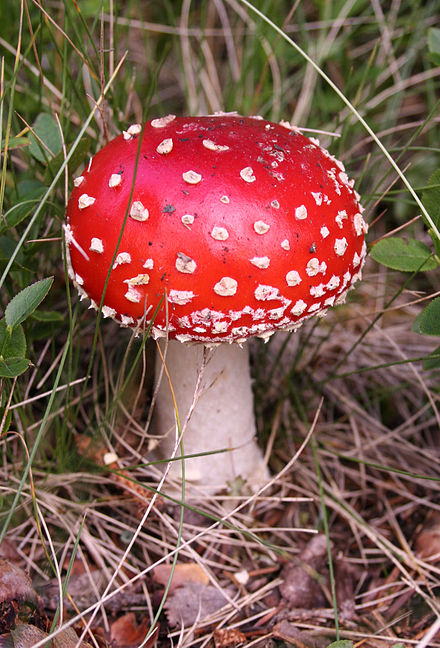
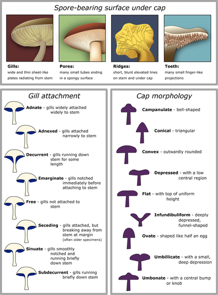

This article is about fungi. For use in food, see Edible mushroom. For other uses, see Mushroom (disambiguation). "Toadstool" redirects here. For other uses, see Toadstool (disambiguation).
The standard for the name "mushroom" is the cultivated white button mushroom, Agaricus bisporus; hence the word "mushroom" is most often applied to those fungi (Basidiomycota, Agaricomycetes) that have a stem (stipe), a cap (pileus), and gills (lamellae, sing. lamella) on the underside of the cap. "Mushroom" also describes a variety of other gilled fungi, with or without stems, therefore the term is used to describe the fleshy fruiting bodies of some Ascomycota. These gills produce microscopic spores that help the fungus spread across the ground or its occupant surface.
Forms deviating from the standard morphology usually have more specific names, such as "bolete", "puffball", "stinkhorn", and "morel", and gilled mushrooms themselves are often called "agarics" in reference to their similarity to Agaricus or their order Agaricales. By extension, the term "mushroom" can also refer to either the entire fungus when in culture, the thallus (called mycelium) of species forming the fruiting bodies called mushrooms, or the species itself.
The terms "mushroom" and "toadstool" go back centuries and were never precisely defined, nor was there consensus on application. During the 15th and 16th centuries, the terms mushrom, mushrum, muscheron, mousheroms, mussheron, or musserouns were used.[3]
The term "mushroom" and its variations may have been derived from the French word mousseron in reference to moss (mousse). Delineation between edible and poisonous fungi is not clear-cut, so a "mushroom" may be edible, poisonous, or unpalatable.[4][5] The word toadstool appeared first in 14th century England as a reference for a "stool" for toads, possibly implying an inedible poisonous fungus.[6]
Identifying what is and is not a mushroom requires a basic understanding of their macroscopic structure. Most are basidiomycetes and gilled. Their spores, called basidiospores, are produced on the gills and fall in a fine rain of powder from under the caps as a result. At the microscopic level, the basidiospores are shot off basidia and then fall between the gills in the dead air space. As a result, for most mushrooms, if the cap is cut off and placed gill-side-down overnight, a powdery impression reflecting the shape of the gills (or pores, or spines, etc.) is formed (when the fruit body is sporulating). The color of the powdery print, called a spore print, is useful in both classifying and identifying mushrooms. Spore print colors include white (most common), brown, black, purple-brown, pink, yellow, and creamy, but almost never blue, green, or red.[7]
